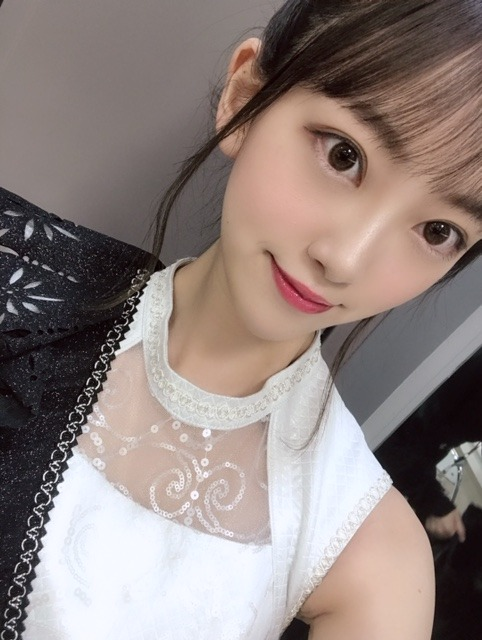
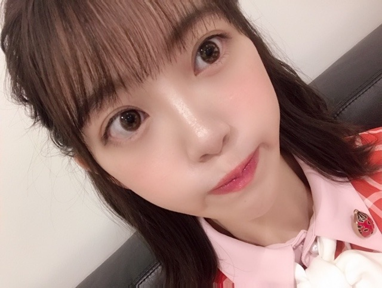
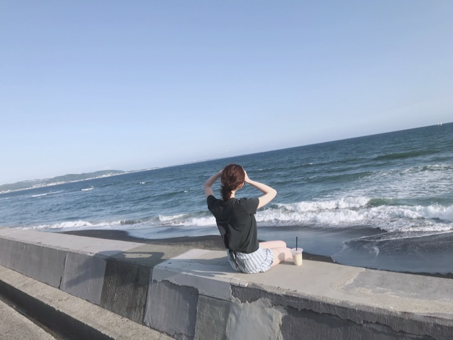
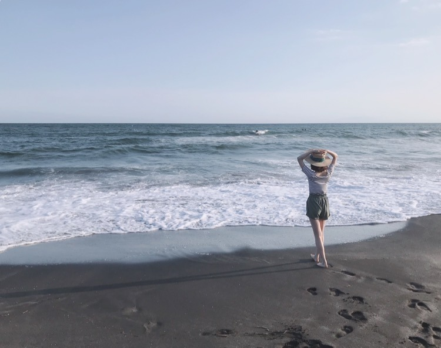
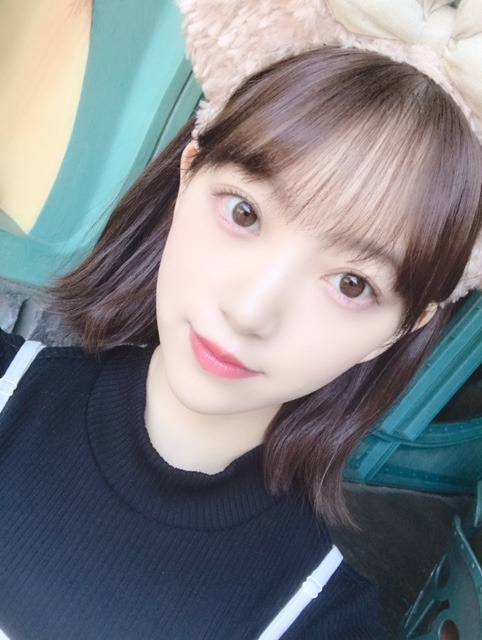

2019/0713Sat辛党になりつつある
こんばんは☺︎
音楽の日、生放送中ですね
既に2曲披露させていただきましたが、まだ出ます
見ててね〜✨✨
楽屋でもみり愛と絢音と横並びになってお菓子を食べながらみり愛が買ってくれたarを読みながら、生放送観てました！楽しい！お菓子美味しい！一袋あけたら食べ切る癖直したい！
歌番組の特番って夏〜って感じしますよね

ポニーテールはまってます！
そういえば、さいきんニキビができまして...
ニキビなのかな？ ぷつっと3つできちゃって...
皮膚科に行く時間ができたら駆け込まなきゃ...

しょんぼりモードです
天気もまだ夏！って感じじゃないし早くカラッと晴れた耳をすませばの雫が図書館に行くときくらいのかんかん照りになってほしいな...
最近感じたこと
私は、やっぱり、自分を周りを信じて前を向き続けなきゃいけない人間だなって改めて思いました
クヨクヨしててもなーんにもうまれないし
むしろダメになっていってる気がするし
うまくいくことが全てじゃなくて 立ち止まって気づけることもたくさんあるなって
強い人は、弱音も希望もはっきり言える人だと思ってます
私なりにぶつかりながら前へ進んでいけたらいいな...
あ！
そうだ、夏の全国ツアーの際に発売されているN46MODEみてくださいましたか？
私はショートパンツ特集で海で撮影をしました☺︎

#彼女の未央奈と海に来た に使ってね！

普段、海か古民家での撮影が多くてそんなイメージなのかな？たしかに海はすき！海鮮美味しいし地球って世界って広いなあって思えるし
大アサリ食べたい
いつか海がきこえるをテーマにしたグラビア撮影とかしてみたいな〜〜

メンバーといる時間、笑ってる時間が何よりも楽しいな〜✨この時間を大事にします！
では☺︎
コメント(326)
今日のみおなもかわいかったー！
追伸です。
前向きはいいことですがあまり無理なさらないでね。
続きませんよ。
心配です。
ショートパンツの後姿がなんか微笑ましい
またライブでもポニテにしてー！
まだ大阪1日目しか当たってないけどσ(^_^;)
未央奈は海というより山ってイメージかも笑
夏で暑いから熱中症とか気をつけてね(* • ω • )b
今日は午後から『音楽の日』ご出演、お疲れさまです。乃木坂46が出演だった時間は全部録画していますので、明日楽しく拝見する予定。充実した三連休です（にこ）。
人間には悩むことも大切だけれど、その悩んだことで前向きになってプラスに転じていくことこそ肝要です。堀さんも悩んだことがポジティブな結果に結びついていくといいですね。ファイト！
ではまたコメント寄せます。おやすみなさい。
さらばだ、また会おう！（気球に乗って去りぬ～）
今も音楽の日生で観てるよ
24時現時点録画
眠たいですけど‼️
時々ジブリや耳すま情報や行ってみた方がいいロケ地をすすめてる者です。(例えばロケ地:都立桜ヶ丘公園 ゆうひの丘の夜景夕景etc)
さきほどのスピッツに関するコメントに加えて、おすすめのドラマや映画を紹介させてもらいます。
自分は30代半ばなので、少し古めの作品を。
①「世界の中心で愛を叫ぶ(ドラマ版)」
大人になった朔(緒方直人)が母校に帰り、恩師(松下由樹)の前で号泣するシーンはもらい泣きしました。
注:サントラのアルバムも是非！1987年、夏etc
②秒速5センチメートル(映画版アニメ)
鬱アニメと言われたほど、深い内容とBGMで観る人をしっとりさせた作品です。観た人によって意見が別れる新海誠作品です。
注①:劇中に使用されている奥華子さんや山崎まさよしさんの歌やサントラもおすすめです。
注②:この作品にはエンディングの違う漫画版があります。上下刊完結なので是非探して読んでみてください。
今回おすすめさせていただいた作品は、100％明るく元気なものではありません。なので、逆にもしご興味があれば観ていただいて、これからの女優業の方にも活かせていただけたら幸いです。女優としての「堀未央奈」も応援しています。
長くなってしまい大変申し訳ございません。
大変お忙しいとは思いますが、気が向いたらでいいので観たり聴いたりしてください。
お身体にお気をつけて。
音楽の日みたよ！
素晴らしいパフォーマンスだったよ！
これからも頑張ってね！
海は、もっといきたいです
明るく豊かに元気よく
活躍お互いに
音楽の日見たよ(≧∇≦)
すごく良かったよ♪
このあとも見るね(*^^*)
写真可愛い(//∇//)
ポニーテール凄く可愛いよ(//∇//)
ニキビ早く治ると良いね。
天気も早く夏になると良いね。
前へ進んで頑張ってね！
ずっと応援してるよ(*^^*)
NMODE46見たよ(≧∇≦)
凄く良かったよ(*^^*)
使うね(≧∇≦)
海がきこえるテーマにした
グラビア撮影できると良いね♪
これからも楽しんでね(*^^*)
頑張ってね！
未央奈ちゃん神推し
秀喜より！(≧▽≦)
あとそのハッシュタグまじ可愛い〜 絶対使いたい(笑)
未央奈大好き過ぎる
音楽の日観てるよ。楽しいね。
音楽の日見てるよ！
次の出番も頑張ってね
入るなら貸切りますよ？？
覚えてないかもしれないけど、この前のビックサイトの個握に行ったキヨです！ディズニーキャストの人です笑
シー来てたのかな？パークで会ってみたいっすわ〜
もしまた来ることがあったら、ぜひ！エンポーリオと、ヴァレンティーナズスウィートにお越しくださいませ〜！笑
未央奈、飛鳥、かずみん、梅マヨ、久保、まなつ、みづき、生ちゃん
可愛かったー。
無表情。まなったんだけ笑ってるように見えたなー。
これからも応援してます。
音楽の日、お疲れ様です！
録画してます！
今は疲れ切っててもうちょっとで寝落ちしそうなので、後日のお楽しみにします笑
arもNMODE46も買ったよ〜。
ハッシュタグ、存分に使わせて頂きます笑
はっきりと言うことは大事だよね！
俺もそう思うし、いっつも俺の意見は発言するようにしてます！
言っても伝わらない時があるのに、言わなかったら尚更だもんね。
しょんぼりする時は、信頼してる人に聞いてもらうのも有りだよね。
ニキビ、俺も治したいけど全然治らない…
治ったと思っても、すぐに復活しちゃう…
やっぱり皮膚科に行くべきなんかな〜。
音楽の日見たよ！
Sing Outもインフルエンサーも淋しい熱帯魚も最高でした！
暑いし忙しいと思うけど体調に気を付けて頑張って下さい！
ポニーテール似合ってるね！
キャプテンと過ごす最後の全国ツアーを楽しんでね！
握手会でみおちゃんのポニーテール見たいなー。
浴衣とセットだったら俺倒れちゃうかもな笑笑
音楽の日、見てるよ！
可愛いです！
体調に気を付けて頑張って下さい
ニキビは、身体の内面からでは？
ちょっと心配です。血液検査もされては？？
頑張って行きましょう！
バイトで見れなかったです…
録画も忘れてました…
ヤラカシタヤラカシタ
では！
音楽の日、見たよ。とても良かったよ。
やっぱ堀ちゃんはポニテ最高に似合うよ。かわいい。
ニキビは疲れてるか、豆食べ過ぎなんじゃない？食事が偏ると良くないよ。
体調気おつけてね。
バイバイ。
ポケモン？？
怖えぇ～...
逆に食べられちゃいそう...
『音楽の日』見てます( ＾∀＾)
ポニーテールは初期の黒髪ロングだった頃よくしてたよね？
お菓子の袋開けたら全部一気に食べきるってポテチのビッグバッグとかも食べきっちゃうの？
俺は逆に何日もかけて食べて最後の方にはお菓子が湿気っちゃいます(^_^;)
ちなみに500のペットボトル1本で半日持ちます( ＾∀＾)
ニキビ早く治るといいね(・o・)
この映画に出演したことは絶対ほりちゃんの財産になると思うよ。
乃木坂のメンバーに謝らなければならぬことが。
音楽の日自分はかっつり外出してました。みてないです。
すっかり忘れてました、ごめんなさい。
次どこかの音楽番組に出る際は必ず観ます。
体調には気をつけてこれからも頑張ってください！
｢音楽の日｣乃木坂46の出演全部視聴しました。ブログ写真１枚目はwinkのカバー曲の歌唱衣装ですね｡ ２人ずつのペアーで綺麗に再現できていました｡ ポニテが似合っています｡ 長時間ありがとうございました。これから休みます。おやすみなさい未央奈さん
今日も体調管理ねー！
ポニーテールかわいいよー！
全曲リアルタイムで観て、録画もしました！
検定があったのですが音楽の日があるということなので頑張れました！この世界に乃木坂があることを嬉しく思います！
次はツアーですが体調に気をつけて頑張ってください！！
やっぱみおなさんは自分の中で輝いてるのですぐ歌番組でも見つけられます！！
自分や周りに自信持ってる人は「付いていきたい」って思える素敵な人だと思います！これからはより引っ張っていく立場だと思うので頑張ってください！
また可愛くなってる気がする！
ニキビは嫌だよね〜
沢山食べて健康でいてね！！
生放送中の合間を縫ってのブログ更新ありがとうございます。
「音楽の日」、本当におつかれさまでした。第２部を合わせると、こんなにも長い歌番組、見たことがありません。しかも生放送ですから、その待機が大変だったことと思います。
「寂しい熱帯魚」見ながら、まだ生まれてないときの曲なんですよね。Wink、懐かしいです。先週の日テレ「MUSIC DAY」のときのキャンディーズとともに、うれしいカバーでした。
それにしても最近の未央奈、「かわいい」から着実に「美しい」になってきましたね。映画の影響もあってか、かわいい「女子高生・初」に比べると一年で、こんなにも成長するのかな？
でも、原点での活動の一つ、「ブログの更新」ありがとうございます。
原点を忘れない、未央奈「えらい」。
音楽の日見てるよ
かわいい癒される
ニキビ治るといいね。
体調に気をつけて頑張ってね。
応援してるよ
未央奈大好き
応援だけですがさせてもらいますね。
私にはそんな気力ないですね。
人にも自分にも期待しすぎない。少し前まで飛鳥さんが言っていたことの意味が，自分なりにですがわかった気がしています。あら，堀さんや飛鳥さんは成長しているのに自分は退行しているのだろうか笑 今まで私は自分を信じすぎていたのだと思います笑 言葉では自分を否定しながらも，実際はどこか自分を過剰に信じていた。いい加減に等身大の自分を認めて期待しすぎず，できる限り平凡に生きていこうかなと思っているこの頃です。
あまりこういうマイナスなこと言うとよくないですかね。
堀さんは堀さんらしくＧＯＧＯ！
失敗したところでやめるから失敗になる，成功するところまで続ければそれは成功になる，っていう松下幸之助さんの言葉好きです。
テレビなどでのキラキラした姿の裏ではうまくいかないことも多いんでしょうけど，試行錯誤して努力してそれを乗り越えてきている堀さん，素敵ですね。
努力がすぐに形になるわけじゃないでしょうし，明確に表れる成果だけではないこともあると思います。
だけど，ぶつかりながらも前を向いて，ですね。考えすぎると気づかぬうちに沼にはまっちゃうからあまり考えない方がいいときもありますしね。
ファイトです。ほんとファイトです。フレー，フレー堀さん，って感じです。
１日お疲れ様です。休めるときは休んでくださいねー。
甘い物があまり好きじゃない割りにはお菓子をよく食べるんすねーどういうこっちゃ。笑
朝起きたらニキビから、人の顔のようなものが..ウケケ。笑
カラッとよりは、ほどよい暑さがいいかな(^^;)今年は色んなアイスをたべるぞ＼(^o^)／。笑
最近感じてること..TOY STORY4は白石さんは観るべきだと思う..理由は観ればわかるから未央奈勧めときな。笑
海より早く釣りに行きたい。笑
あと献血の結果きたーB+だったよ＼(^o^)／(知ってたが。笑)
おやすみおなー
つけたらちょうど音楽の日で乃木坂だったよ。
きょうは雨でテレビのアンテナの調子悪かったけど。
しっかりそのときは画面が綺麗に映った(笑)
まぁ、もちろん未央奈を速攻見つけた、未央奈最強。
しょうじき、インフルしか見れなかったけどね(泣)
ずっと、tbsだけ映りがいつも悪くて。
くぼしおりちゃんの誕生日もおめでとうだね！
今日も未央奈を見れて幸せでした。応援してます！
そうやって奮起させてる未央奈ちゃん、尊敬します。
今日も素敵なパフォーマンスでした。
体調にはきをつけて、ゆっくり休んでくださいね。
未央奈ちゃんのおかげで、わたしも子どもたちのためにがんばれます。


ブログ更新ありがとうです！
音楽の日テレビ視ましたよ
ポニーテール似合ってますね！やっぱり！！
楽屋も楽しそうですね✨
でも、何かクヨクヨする出来事合ったのかな…？
前向きになるのが一番です。
いつも応援してますのでこれからも頑張ってね
体調に気を付けて！！